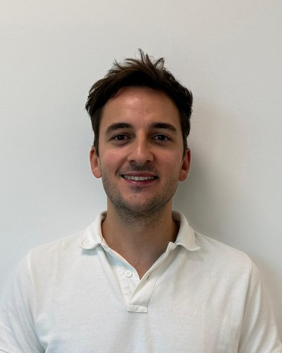

Afonso Botelho
Senior GNC/AOCS Engineer
Indra Space (formerly DEIMOS Space), Lisbon, Portugal
PhD candidate, Instituto Superior Técnico, University of Lisbon
Personal email: afonso.cbotelho [at] gmail.com
Academic email: afonso.botelho [at] tecnico.ulisboa.pt
Close-range GNC technical lead
ClearSpace-1, ESA's flagship active debris removal mission
Mission-enabling GNC algorithms
State-of-the-art onboard-optimization guidance and control for the ClearSpace-1 capture
Landing GNC to TRL 4
Reusable launcher recovery, PIL-validated (RETALT, SALTO)
PhD in onboard optimal GNC
First author in IEEE TCST, ACC, EuroGNC, CEAS Space Journal and a Springer monograph
About me
I am a GNC/AOCS engineer at Indra Space in Lisbon, with six years of experience designing guidance, navigation and control (GNC) systems for European space missions. I am currently the technical lead for the close-range GNC of ClearSpace-1, ESA's flagship active debris removal mission.
Beyond guidance and control design, my work has also included relative navigation, attitude control, thruster management, FDIR, simulation, and testing up to processor-in-the-loop. I have worked both on in-orbit rendezvous and on the recovery of reusable launch vehicles (RETALT, SALTO, SURE, AI4GNC, VALORS), where I matured landing GNC up to TRL 4.
Across these projects, my particular strength is onboard optimization for real-time guidance and control: model predictive control, embedded convex optimization and control allocation, taken from research all the way to implementations that run on an onboard processor.
I carried out an industrial PhD at Instituto Superior Técnico (2022–2026), advised by Prof. João Miranda Lemos (INESC-ID) and Dr. Paulo Rosa (Indra Space), on Onboard Optimal Guidance and Control for Safe Spacecraft Rendezvous. The defence is scheduled for December 2026.
I have a long-standing interest in all things space, from spacecraft technology to astronomy, and it is a big part of what I enjoy about my work.
Research interests
GNC system design for rendezvous, proximity operations and capture of non-cooperative targets
Guidance for powered descent and landing of reusable launchers
Model predictive control: robust, stochastic and System Level Synthesis
Embedded convex optimization and real-time solvers
Optimal control allocation and thruster management
Recent News
Dec 2026 – PhD defence at Instituto Superior Técnico.
Sep 2026 – Poster on “Efficient Operator Splitting Optimization for System Level Synthesis Model Predictive Control” at the ESA GNC & ICATT Conference, Sevilla, Spain.
May 2026 – Presented “Stochastic Minimum-Fuel Output Model Predictive Control with Finite-Time Completion” at the American Control Conference (ACC), New Orleans, USA.
May 2026 – Presented “Robust Model Predictive Control for Rendezvous with Relative Orbital Elements and System Level Synthesis” at the EuroGNC Conference, Madrid, Spain.
Apr 2026 – PhD thesis submitted.
May 2025 – Explicit thruster control allocation paper published in IEEE Transactions on Control Systems Technology.
Awards
PhD Fellowship, Portuguese Space Agency / FCT, 2022–2026.
Prémio Prof. Luís Vidigal, INESC-ID, 2019: best MSc thesis at IST in electrical and computer engineering and related fields.
Outside of work
When I am not working, I am usually following the latest news on space missions, technology and exploration, or playing music: I am a modest guitar and piano player (and a touch of mandolin). Check out my YouTube channel!